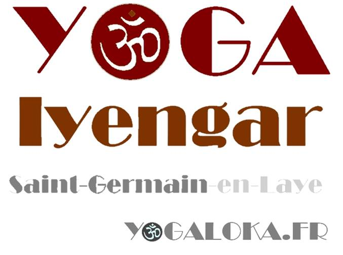
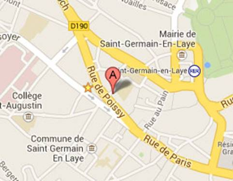
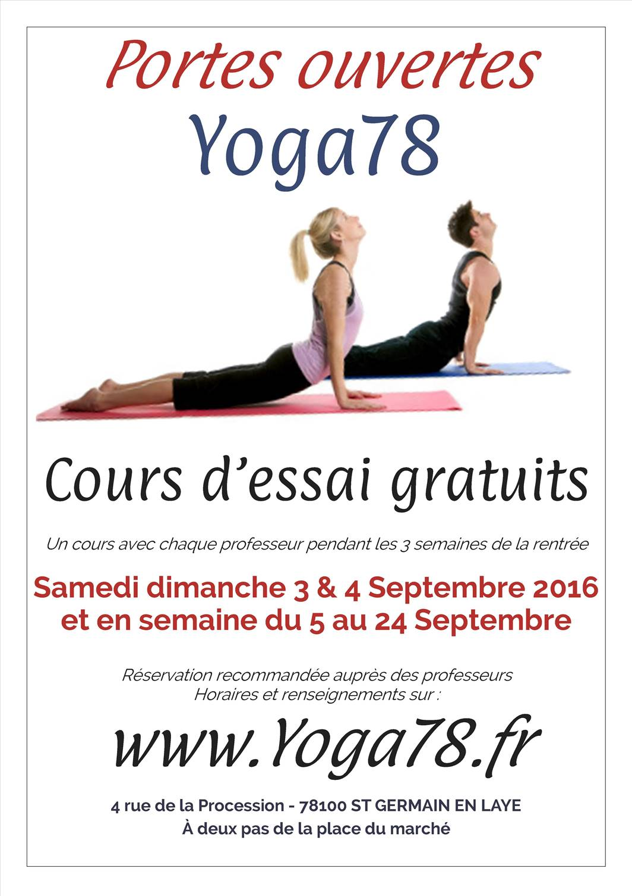
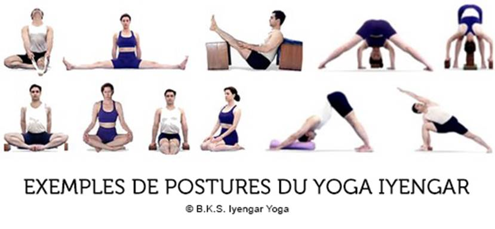
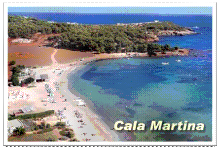

Bienvenue à l’école de Yoga Iyengar de Saint Germain en Laye
Nous situer – Actualité – Horaires – Yoga Iyengar – Enseignants - Salle de pratique- Tarifs – Stage d’été à IBIZA - Contact
4 RUE DE LA PROCESSION - 78100 ST GERMAIN EN LAYE
A deux pas de la place du marché

Stage de Yoga Iyengar à IBIZA du 17 au 22 Aout 2015

Journées portes ouvertes septembre 2015
- Samedi 5 Septembre : cours d’essai gratuit à 10h45
- Dimanche 6 Septembre : cours d’essai gratuit à 10h45
- Samedi 26 Septembre : Cours d’essai gratuit à 10h45
- Dimanche 27 Septembre : Cours d’essai gratuit à 10h45
Horaires des cours 2015 2016
Du 7/9/15 au 29/06/16
Pendant vacances scolaires, certains cours seulement sont assurés.
Nous garantissons en moyenne au moins 35 cours par semaine et par horaire sur l’année
Lundi
Lundi 9h30 – 11h30 niveau intermédiaire / Rachel
Lundi 18h30 – 20h niveau débutant / Jean-Baptiste
Lundi 20h – 22h niveau intermédiaire / Jean-Baptiste
Mercredi
Mercredi 18h30 – 20h niveau intermédiaire / Rachel
Mercredi 20h – 22h niveau débutant / Rachel
Samedi
Samedi 10h45 – 12h45 niveau débutant / Rachel
Dimanche
Ateliers thématiques. Le planning sera mis à jours en au fur et à mesure de l’année
Qu’est-ce que le Yoga IYENGAR® ?
B.K.S. Iyengar, (14 déc. 1918 – 20 Aout 2014), fut l'un des derniers grands maîtres de yoga de notre temps et est toujours considéré comme une légende. Il fut le maitre du célèbre violoniste Yehudi Menuhin et reconnu par Times Magazine comme l’une des 100 personnalités les plus marquantes au monde.

La méthode Iyengar est basée sur :
Les asanas ou postures qui agissent consciemment et en profondeur sur toutes les parties du corps et de l’esprit.
Le pranayama, ou respiration contrôlée qui oxygène les organes, augmente l'énergie, calme le système nerveux et permet de contrôler les émotions.
Quelles sont les particularités du Yoga IYENGAR® ?
La méthode est précise, et rigoureuse. L’attention est tout particulièrement portée sur l’alignement des différentes parties du corps dans l’espace.
Des supports adaptés sont utilisés afin développer les techniques qui permettront un apprentissage progressif des postures des plus simples aux plus avancées.
Qui peut pratiquer le Yoga IYENGAR® ?
Toute personne, quel que soit son âge, sa souplesse, son mode de vie et sa culture d'origine.
Les personnes ayant des problèmes de santé doivent en informer le professeur. Leur pratique sera alors adaptée à leur cas particulier.
Que vous apportera le Yoga IYENGAR® ?
Cette méthode apporte au corps et à l’esprit souplesse, force, équilibre et santé grâce à :
- L’augmentation de la faculté de concentration.
- La diminution de la fatigue.
- La prévention des maladies courantes.
Pour plus de précision sur la méthode d’enseignement du Yoga Iyengar,
Cliquez ICI
Rachel Bossard
Pratique le Yoga Iyengar depuis Septembre 1999.
Enseignante formé par Faeq Biria
Diplômé de l’Institut de Yoga Iyengar® à Pune en Inde en 2007.
Enseigne le Yoga Iyengar depuis 2006
rachel.bossard@gmail.com 06 10 15 35 58

Jean-Baptiste Nallet
Pratique le Yoga Iyengar depuis Octobre 2000.
Enseignant formé par Faeq Biria
Diplômé de l’Institut de Yoga Iyengar® à Pune en Inde en 2007.
Enseigne régulièrement le Yoga Iyengar depuis 2006
jb.nallet@gmail.com 06 60 50 60 04

Pour plus de renseignements sur la certification des professeurs Iyengar, cliquez ici
Pour plus de renseignements sur les directives éthiques des enseignants de Yoga Iyengar, cliquez ici

Notre salle claire et lumineuse comprend tout le matériel pour la pratique du yoga Iyengar
Vous pouvez toutefois apporter votre propre tapis si vous le souhaitez

1 cours/semaine A l'année : • 610¤
Forfait illimité Iyengar année : • 750¤ (Accès à tous les cours Iyengar®, en fonction des places disponibles)
Cours à l’unité: • 27¤
Parmi les différents styles de Yoga, du centre Yoga78 Vous vous demandez lequel vous conviendra le mieux ?
Optez pour le PASS DECOUVERTE YOGA78
Pour 40¤, vous pourrez essayer pendant 15j un cours avec chaque professeur avant de vous décider
Pour les confirmés et les débutants
Formule pratiquant confirmé
Pour suivre ce stage, il faudra avoir suivi au moins une année de pratique de la méthode Iyengar
Le matin : de 9h à 11h30 pratique des postures
Le soir de 18h à 20H postures inversées et pranayama
Pour les participants qui ne sont pas des élèves réguliers du centre, un entretien préalable est préférable
Formule débutant
Accessible aux personnes qui débutent la méthode Iyengar
Tous les matins de 11h30 à 13H : Cours débutant selon la méthode Iyengar
Pour les débutants qui n’ont jamais pris de cours avec nos enseignants, un certificat médical est recommandé
Pour les enfants
Pendant que les parents pratiquent, nombreuses activités sur place : Garde d’enfant, ateliers, animations, spectacles, jardinage, plage, piscine, etc.
Le lieu
CIELAZUL, Cala Martina C/Llevant 707849 Santa Eularia del Rio IBIZA Espagne. Tel:(+34) 971330 452

http://www.cielazulibiza.com/lang/fr
Logement
Tous les studios et appartements d’une ou deux chambres sont dotés d’une cuisine équipée, d’une salle de bains et d’une terrasse.
Commodités
Vous trouverez sur place un snack-bar et ses cocktails de fruits frais, une salle de séminaire, une piscine, une boutique, un poste internet-wifi, et divers services : gardes d’enfants, massages, animations et spectacles.
Plage et environs

A quelques dizaines de mètres, la Cala Martina, très belle plage de sable doré, vous propose ses restaurants au bord de l’eau, chaises longues, club de plongée, club de voile, windsurf, parachute ascentionnel, kite-surf, pédalos et autres sports aquatiques.

A 1,50 km, découvrez le petit port de Es Canar très animé le soir avec ses nombreux bars et restaurants et son marché hippie (ouvert les mercredis).

A 4 km, Santa-Eularia, charmante petite ville portuaire, vous offre tous les services et un accès rapide à l’Ile de Formentera.
Tarifs
Cours de yoga
Cours confirmé : 350¤
Cours débutant : 150¤
Famille : 10% de réduction sur l’ensemble dès le deuxième cours
Hébergement
A partir de 250¤ environ par personne la semaine selon la formules choisie, en appartement
http://www.cielazulibiza.com/lang/fr/precios/
D’autres formules moins chères existent : cabane 2 personnes (17.5¤ la nuit par personne), bungalow 5 personnes (19¤ la nuit par personne), chalets 4 personnes (23¤ la nuit par personne)
http://www.campingescana.com/fr/index_fr.php
Possibilité de loger à l’extérieur
Restauration
10¤ le repas végétarien sur place
Possibilités de préparer sa propre cuisine en appartement, ou de manger à l’extérieur
Renseignements et réservation
LES HEBERGEMENTS ETANT TRES PRISéS A CETTE EPOQUE DE L’ANNéE PENSEZ A RESERVER RAPIDEMENT
Réservation obligatoire auprès de
Jean-Baptiste NALLET 06 60 50 60 04 jb.nallet@gmail.com
Jean-Baptiste Nallet jb.nallet@gmail.com 06 60 50 60 04
Rachel Bossard rachel.bossard@gmail.com 06 10 15 35 58